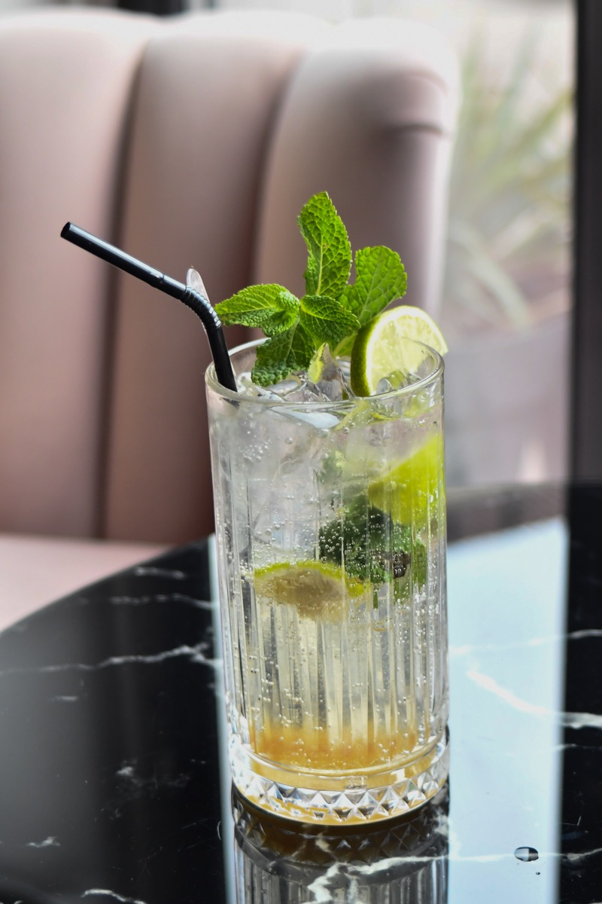

Zoetermeer · Dorpsstraat
Tot zo aan de bar.
Bij Melanie aan de bar ben je welkom voor cocktails, lokaal bier en borrelbites. Je vindt ons aan de Dorpsstraat 110H.
Wanneer we open zijn
Wanneer zien we je?
- Maandag en dinsdag
- Gesloten
- Woensdag
- 13:00–18:00
- Donderdag t/m zondag
- 13:00–22:00
Adres & contact
Tot aan de bar.
Dorpsstraat 110H
2712 AM Zoetermeer
Over Mellie’s
Gerund door Melanie.
Melanie houdt van genieten en samenkomen. Bij Mellie’s kun je de hele dag borrelen met een plank om te delen. Later op de dag schuif je aan voor een cocktail of iets alcoholvrijs.
Kom binnen voor een spontane borrel, of vraag vooraf een tafel aan. Je aanvraag is pas definitief zodra Melanie die heeft bevestigd.
